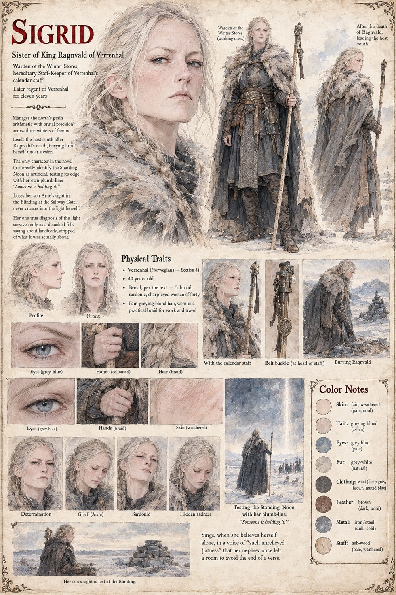

Sigrid
Warden of the Winter Stores · Staff-Keeper of Verrenhal · 40 years old · later regent for eleven years
The king's sister and Verrenhal's Warden of the Winter Stores, a broad, sardonic, sharp-eyed woman who by a hereditary duty nobody can explain also carries and cuts the pale ash-wood calendar staff on which the kingdom's year is tallied, with her dead husband's belt buckle on a thong at its head. Her arithmetic is simpler than the Reckoner's and, across three winters of ash, more accurate: she counts the days between today and the day the barley runs out, and shows Ragnvald where the staff and the tally cross. She sings, when she believes herself alone, in a voice of such unrelieved flatness that her young nephew once left a room rather than hear the end of a verse.
She buries her brother under a cairn on the pass, writes the Reckoner a letter on how the light must be made (it lies unopened under a paperweight for five months), and finds at the Saltway Gate a row of a hundred and forty-one dead with their feet toward the gold. She lays her staff across the line, hangs her lead plumb from it and holds it for a hundred breaths in a gale: the weight swings and the edge does not. At the parley she tells Piero that men are not taken into the light, they go down stairs. Her son Arne loses his sight at the Blinding, and she never crosses the line herself. She rules Verrenhal as regent for eleven years with the dead king's ring on her thumb, and her one true diagnosis survives only as a saying about landlords.
“Nothing in the sky has an edge. Someone is holding it.”
Appears In

Related Subjects


Related Records

The host of Verrenhal comes down the pass in the ash, the light a gold coin far below: Sigrid at its head with the calendar staff, Ragnvald on his litter, and Arne beside the cart.

Sigrid lays the calendar staff across the line, hangs her lead plumb from it and holds it a hundred breaths in a gale: the weight swings, and the edge does not.

The parley across the line, bright inside and black outside: Piero in the Reckoner's grey faces Sigrid, and a sentence he did not know he knew goes over the line as a refusal.